Revolver : Colt .45 / Long Colt .45
Producător : Samuel Colt
Origine : USA
Muniție : calibrul 0,45 inchi (.22 Short)
Revolverul inventat de Samuel Colt, deși oficial era denumit „pistolul revolver Paterson”, a rămas în limbajul popular ca „revolverul Colt”, sau chiar mai simplu - „Colt”, devenind o moștenire culturală și industrială și aducând o importantă contribuție la dezvoltarea tehnologică militară.
Revolverul Colt .45 (utiliza muniție de calibrul 0,45 inches) , una dintre armele despre care s-a spus că „a clădit istoria Americii” . Acest model a fost realizat în anul 1851 , succesul său ducând la perfecționarea continuă a revolverului , prin variantele apărute în anii 1878 și 1898 .
Revolverele Colt au fost poreclite "The Great Equalizer" de către americani , deoarece aceste arme de foc puteau fi încărcate și folosite de oricine , comparativ cu pistoalele anterioare apariției lor , pistoale care necesitau dexteritate și o forță pe care nu o puteau avea copii , bătrânii sau persoanele nefamiliarizate cu ele.
Preț actual : $10.000 (în cadrul licitațiilor)
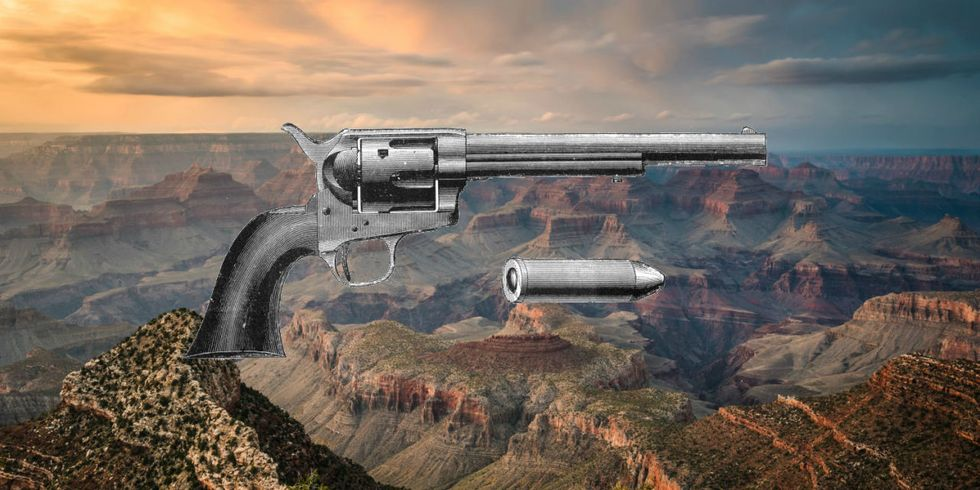
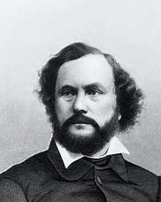
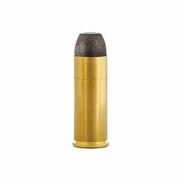
Revolver : Smith & Wesson Model 1
Producător : Smith & Wesson (Horace Smith și Daniel B. Wesson) în colaborare cu Rollin White
Origine : USA
Muniție : .22 Short
În anul 1852 inginerii Horace Smith și Daniel B. Wesson și-au unit forțele pentru a produce arme de foc de mici dimensiuni, înființând corporația Smith & Wesson , la Norwich , Connecticut .
Celebritatea acestei firme a unor ambițioși antreprenori americani a venit odată cu producerea pe scară largă a revolverului Smith & Wesson Model 1 . Succesul respectivului modelul s-a datorat unor inovații tehnice , în primul rând un cilindru rotativ („butoiaș”) superior calitativ celui creat de Samuel Colt , cilindru realizat prin colaborarea cu inventatorul american Rollin White .
Și alți producători de arme de foc au preluat invenția lui White , ceea ce a dus la un proces pentru drepturi de autor , câștigat de Rollin White în anul 1862.
Revolverele produse de Smith & Wesson în Springfield , Massachusetts, unde se mutase ulterior firma , au devenit repede armele preferate ale aventurierilor și nelegiuiților, dar și ale oamenilor legii și dueliștilor din „Vestul Sălbatic” . Corporația Smith & Wesson a devenit celebră nu numai datorită multitudinii de tipuri de revolvere produse , ci și datorită varietății de cartușe produse pentru marile companii de armament americane .
Odată cu izbucnirea Războiului Civil American , comenzile de armament primite de Smith & Wesson au crescut mult , revolverele produse de această companie demonstrându-și eficiența , comparativ cu revolverele produse de firmele rivale Colt , Winchester , Browning etc .
Preț actual : $10.000 (în cadrul licitațiilor)
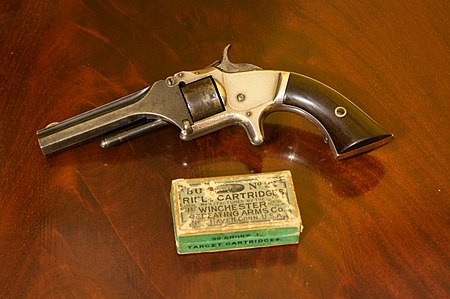
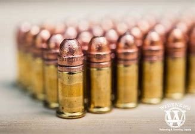
Revolver : Webley Mk VI
Producător : Webley & Scott , RSAF Enfield
Origine : Imperiul Britanic
Muniție : .455 Webley
Revolverul Webley a fost , în variante diferite , principalul pistol de serviciu din dotarea forțelor armate ale Marii Britanii , Imperiului Britanic și Comunității Națiunilor din 1887 până în anul 1963 .
Frângerea revolverului pentru reîncărcare acționează și ejectorul , extracția cartușelor folosite din butoiaș fiind automată .
Primul model , denumit Webley Mk I , a fost introdus în dotare în anul 1887 . În timpul celui de-al Doilea Război al Burilor , modelul Mk IV era în uz . Cel mai cunoscut model a fost însă Mk VI , introdus în dotare în anul 1915 , în timpul Primului Război Mondial .
Arma folosește puternicul cartuș .455 Webley , retras din uzul militar în prezent . Varianta Mk IV care folosea cartușul .38/200 este încă în dotarea unor organe de poliție din câteva țări.
Preț actual : $10.000 (în cadrul licitațiilor)
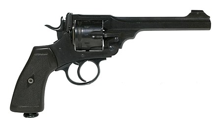
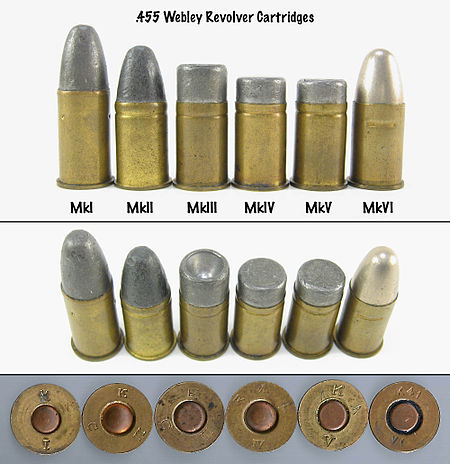
Revolver : Saint Etienne modelul 1892
Producător : Fabrica de armanment Saint-Étienne
Origine : Franța
Muniție : 8 mm
Revolverul Saint Etienne , model 1892 , cunoscut și ca Revolver Lebel (după numele colonelului Nicolas Lebel, deși nu există nici o evidență a implicării despre vre-o implicare a lui Lebel în dezvoltarea armei sau a muniției aferente) sau Saint Etienne 8mm , a fost un revolver produs de Fabrica de armanment Saint-Étienne , din Franța , ca înlocuitor a revolverului MAS 1873-ului .
El a fost armamentul individual standard pentru ofițerii francezi în timpul Primului Război Mondial .
Modelul 1892 este un revolver cu cadru fix , cu cilindrul montat separat pe un braț basculant spre dreapta , pentru încărcarea manuală . Modelul a intrat în serviciu în anul 1893 , fiind folosit de armata și poliția franceză până la mijlocul anilor 1960 .
Beneficiind de o mecanică și un finisaj foarte bune, revolverul trăgea cu cartușe de 8 mm , cu o putere de penetrare echivalentă cu aceea a cartușelor .32 ACP .
Deși inițial fusese proiectat pentru a servi ca armă individuală doar pentru ofițerii Armatei Franceze , revolverul a fost fabricat în peste 350.000 de exemplare , între 1892-1924 . A fost în înzestrarea forțelor terestre , jandarmeriei și marinei franceze , iar aceste revolverul a fost înlocuit în serviciu de pistoale semiautomate în 1935 .
Preț actual : $3.000 (în cadrul licitațiilor)
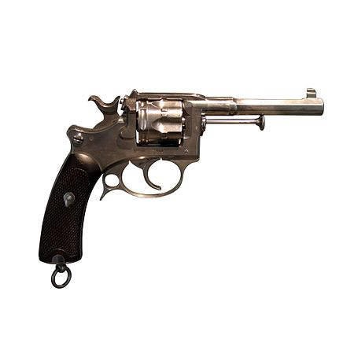
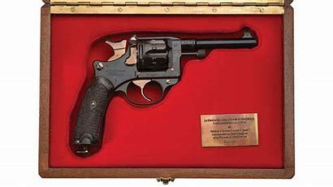
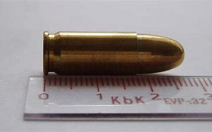
Revolver : Revolver Smith & Wesson , Model 3
Producător : Smith & Wesson (Horace Smith și Daniel B. Wesson)
Origine : SUA
Muniție : 11 mm
Revolverul Smith & Wesson , Model 3 a fost o armă portativă de infanterie de calibrul 11 mm , din categoria revolverelor , aflată în înzestrarea Armatei Statelor Unite ale Americii și a altor armate , în perioada Primului Război Mondial și în perioada interbelică . Revolverul a fost utilizat și de Armata României , începând cu campania din anul 1917 , fiind achiziționate din Spania , un număr total de 94.684 de bucăți , fabricate de fabrica Trocaola Aranzabal Y Cia din Eibar .
Revolverul Smith & Wesson era o armă portativă neautomată , destinată tragerii la distanțe mici , pentru autoapărare . Avea țeavă ghintuită , sistemul de alimentare era cu acționare manuală cu un cilindru rotativ cu 6 cartușe .
Preț actual : $5.000 (în cadrul licitațiilor)
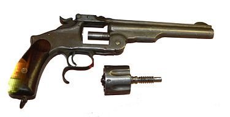
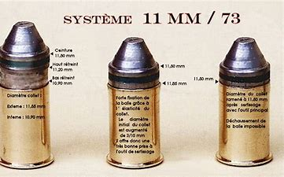
Revolver : Ruger LCR
Producător : Sturm, Ruger & Co. , Joseph Zajk
Origine : SUA
Muniție : .22 LR , .22 WMR , .38 Special +P , .357 Magnum , 9mm Luger ,.327 Federal Magnum
Ruger LCR este un revolver compact construit de Sturm, Ruger & Co. și a fost anunțat că va apărea în ianuarie 2009 . LCR vine de la "Lightweight Compact Revolver" . Acesta încorporează mai multe caracteristici noi , cum ar fi o prindere din polimer și o carcasa de declanșare și un receptor monolitic . La 13,5 oz (380 g) , LCR-ul este cu aproape 50% mai ușor decât revolver-ul făcut din oțelul inoxidabil SP101 , deoarece numai câteva bucăți ale acestui revolver sunt realizate din oțel inoxidabil .
LCR a fost inițial lansat pentru muniția de tip .38 Speciale . În iunie 2010 , Ruger a lansat LCR-357 creat pentru .357 Magnum .
Odată cu creșterea popularității LCR-ului , în decembrie 2011 Ruger a anunțat noul Ruger LCR 22 , cu muniția specifică de .22 LR , cu o capacitate de opt cartușe . În vara anului 2013 , Ruger a introdus o versiune de LCRW pentru .22 winchester Magnum Rimfire (WMR) , cu o capacitate de șase cartușe . În toamna anului 2014 , Ruger a introdus o versiune pentru munișia Luger de 9 mm (revolver-ul ținând 5 cartușe) și o versiune pentru .327 Federal Magnum (revolver-ul ținând 6 cartușe) , un an mai târziu .
Preț actual : $600
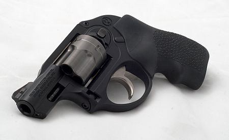
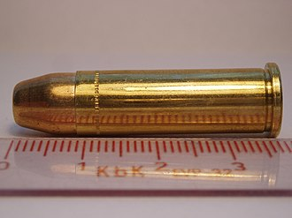